Backend
C# / .NET, ASP.NET Core, Entity Framework Core, SQL Server. REST APIs and microservices built around SOLID and clean-code principles — the foundation I started on at Baufest and still ship on today.
Semi-Senior FullStack & Cloud Software Developer
I build production systems on AWS Serverless and .NET/Angular at Baufest, and bring agentic AI tooling into how I ship — fast, without cutting corners on production quality.
I'm a Semi-Senior FullStack & Cloud Software Developer at Baufest, where I grew from trainee to independently owning delivery across multiple client projects. I specialize in AWS Serverless and Event-Driven architectures — Lambda, API Gateway, SQS, S3, DynamoDB — on a foundation of C#/.NET, Angular and SQL, with system integrations delivered through Dell Boomi (Professional Integration Developer certified).
I've taken responsibility for production deployments and releases (TeamCity, Octopus Deploy, HangFire), automated recurring processes, and worked directly with clients in reconciliation sessions to help shape technical decisions. More recently I've been leaning into AI-assisted, agentic development — Claude Code (certified), Kiro's spec-driven workflow, GitHub Copilot — to ship faster without cutting corners on clean code and production quality.
Get in touchA cloud-native, production-focused stack — plus the AI-assisted workflows I use to ship it faster.
C# / .NET, ASP.NET Core, Entity Framework Core, SQL Server. REST APIs and microservices built around SOLID and clean-code principles — the foundation I started on at Baufest and still ship on today.
AWS Serverless & Event-Driven architecture — Lambda, API Gateway, SQS, S3, DynamoDB. Where I moved after my first year at Baufest, and it's become my strongest area: designing systems that hold up under real production load.
Claude Code (certified), Kiro spec-driven development, GitHub Copilot — hands-on proficiency with agentic and spec-driven workflows in daily development.
Angular, TypeScript and Kendo-UI power the SPA layer I ship in production at Baufest, alongside Razor views for internal tooling. React and Vue come from self-driven projects, where I owned the UI end to end.
Dell Boomi (iPaaS) integrations between internal systems and third-party services, with event-driven messaging patterns.
TeamCity and Octopus Deploy for CI/CD and production releases; HangFire and Task Scheduler for automated recurring jobs; Git-based workflows across cross-functional teams.
SOLID and Clean Code as defaults, not afterthoughts; secure-by-design habits from OWASP; Scrum/Agile delivery end to end.
Comfortable owning the client conversation, not just the code — from reconciliation sessions at Baufest to freelance scoping at NetGuay. Genuinely energized by problems I haven't solved before.
In progress — systems analysis and software engineering, building formal fundamentals on top of four years of hands-on production experience.
Moved to Montevideo to pursue this degree while working. Choosing a productive-orientation track made it clear agronomy wasn't where my interest truly was — in 2022 I left to focus fully on software development, the pivot that led to Baufest.
Technical-professional degree in agricultural and livestock production — the path that came before software development.
Outside Baufest, I run NetGuay Creations, a freelance web development studio — client discovery, design, build and hosting, end to end.
Smaller builds from courses and self-study — where I first tried out React, Vue and API integrations.
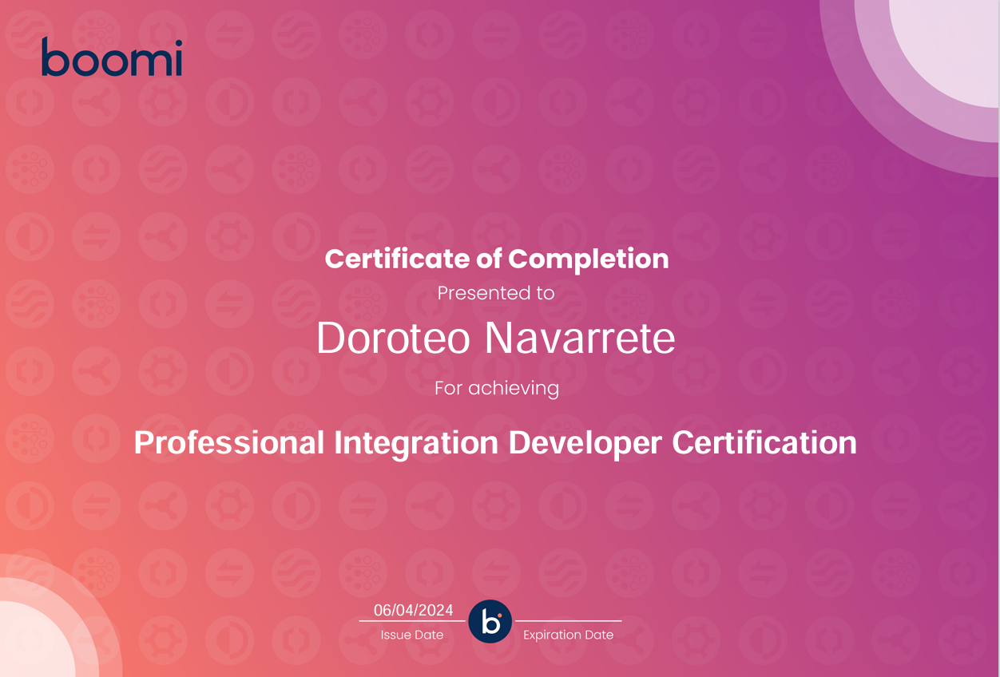
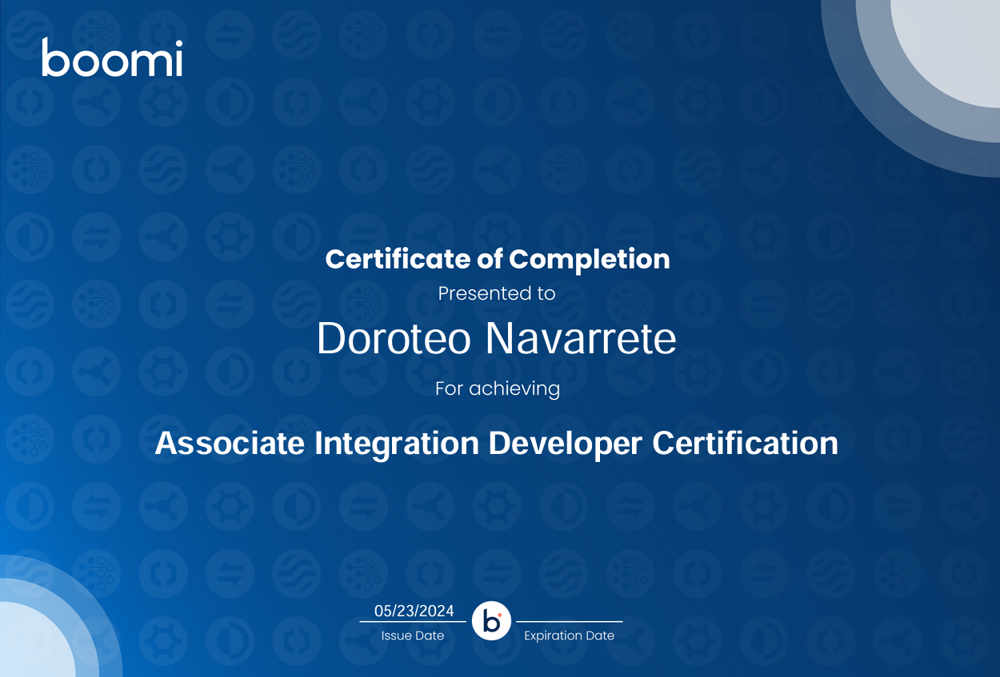
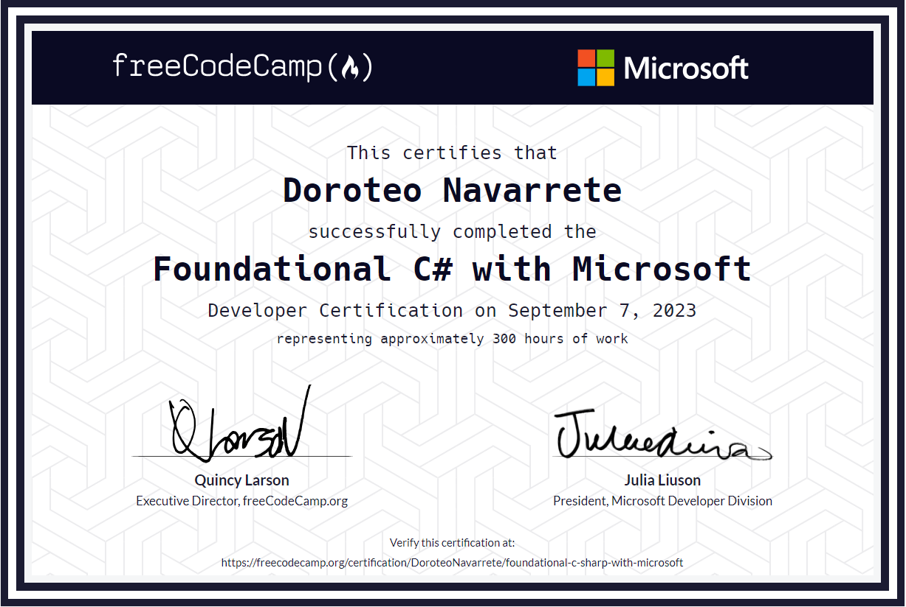
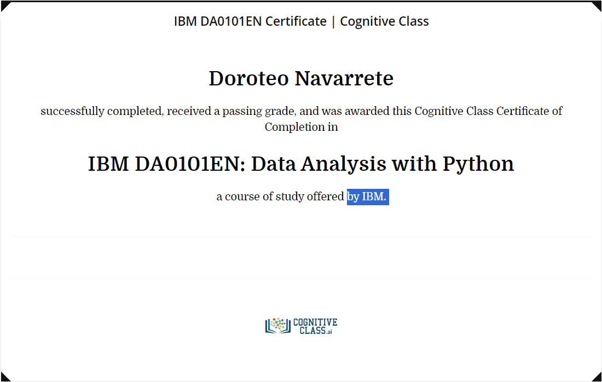
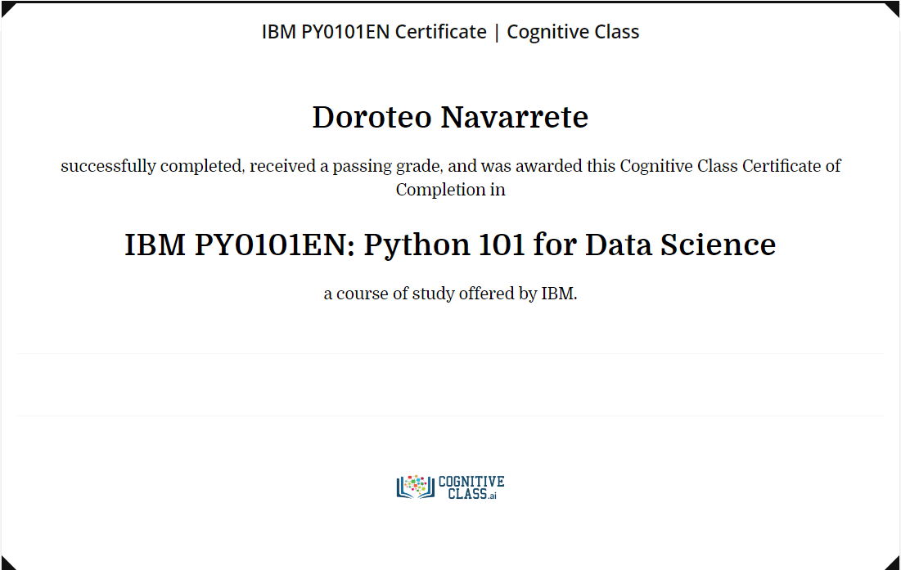
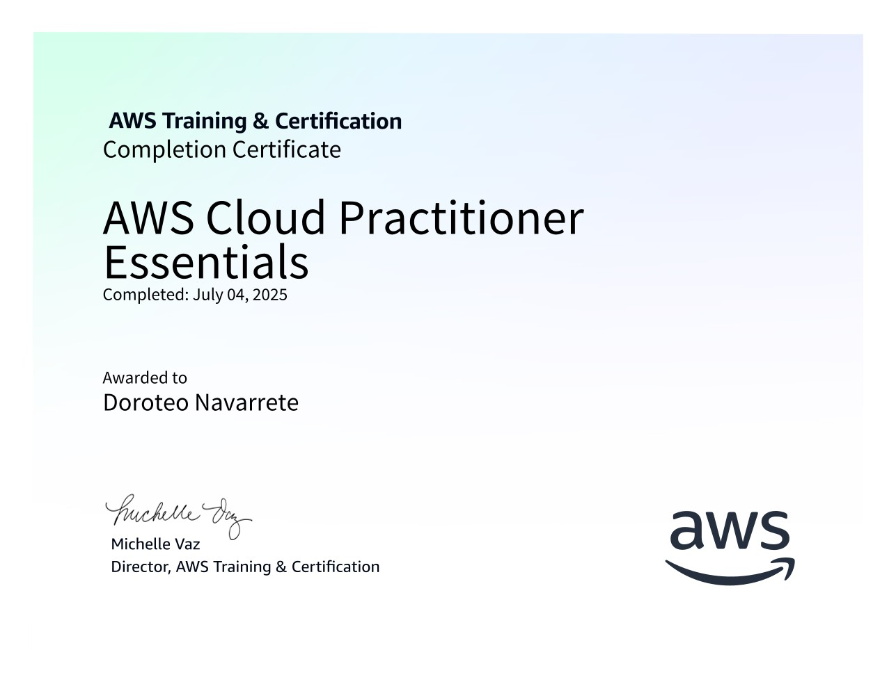
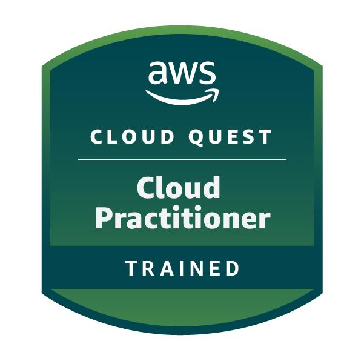
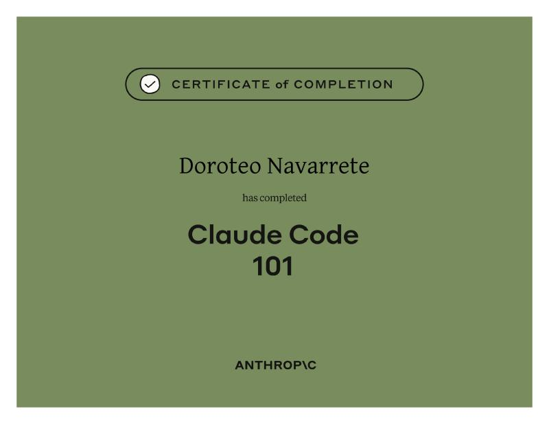
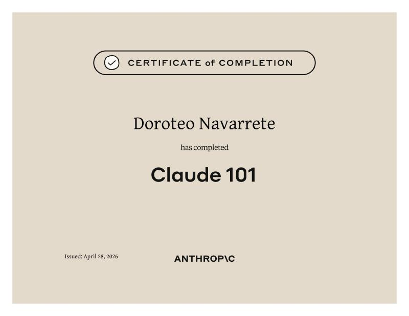
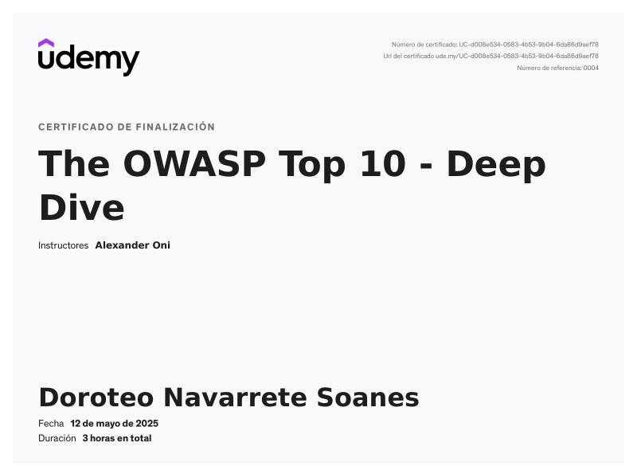
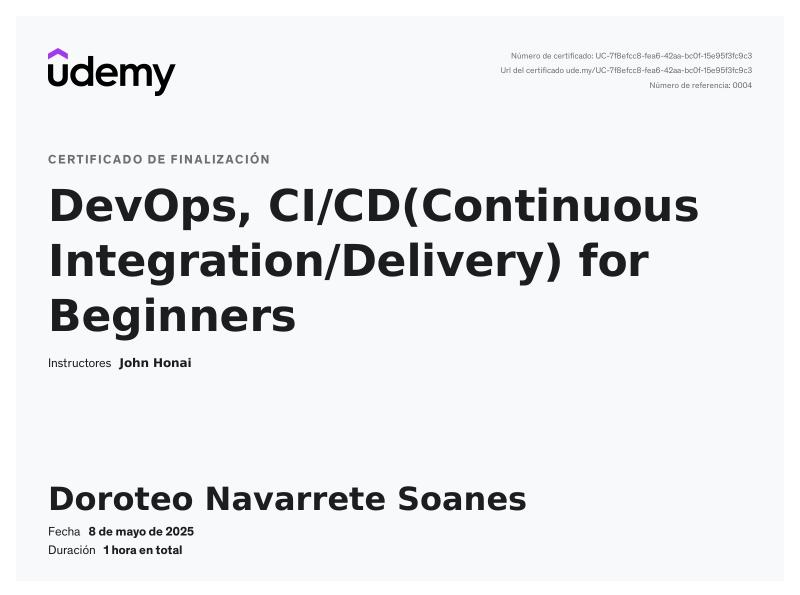
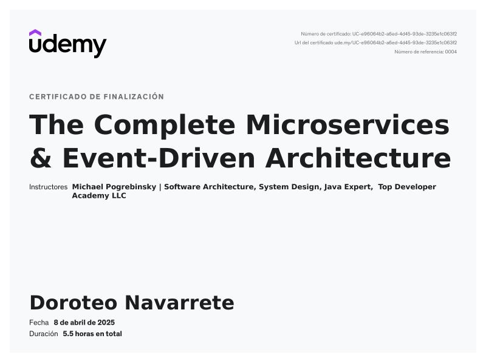
Open to new opportunities — reach out through any of these, or send a message below.